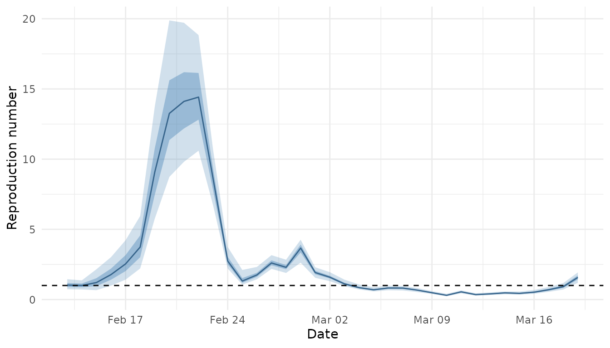
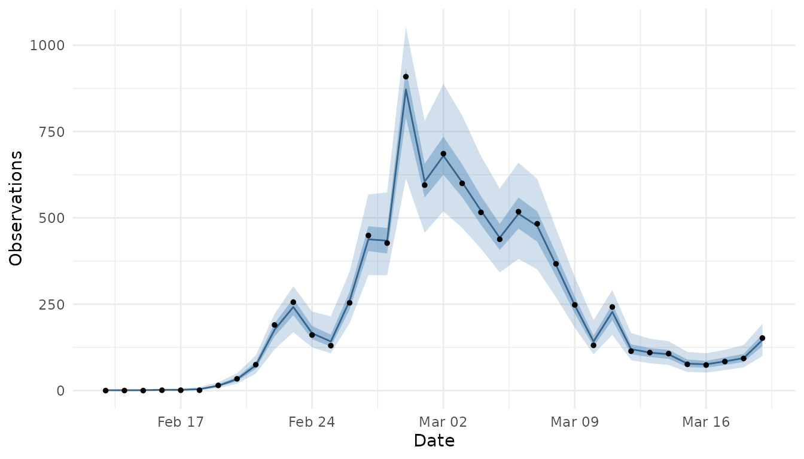
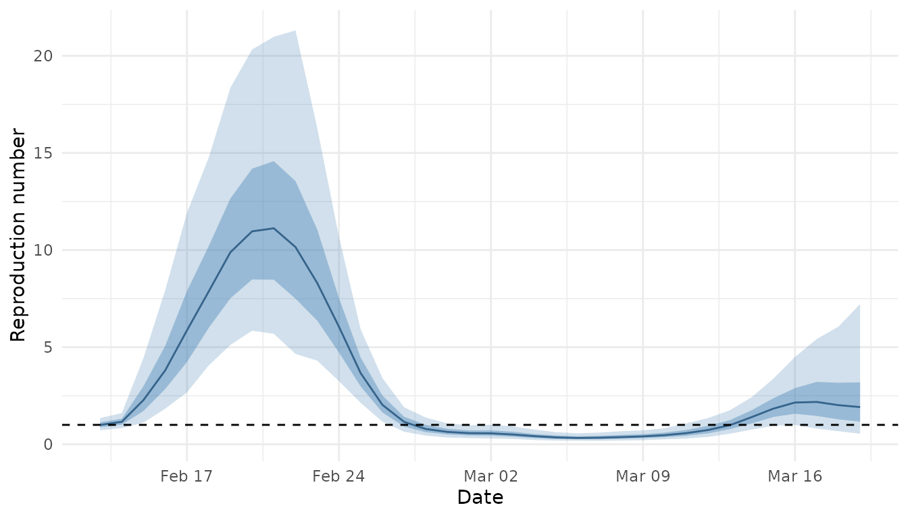

Mishra et al. (2020) derived the renewal equation from an age-dependent branching process and combined it with a negative binomial observation model to estimate the time-varying reproduction number from reported cases. This vignette fits their model to test-confirmed COVID-19 cases from South Korea in early 2020, following the ComposableTuringIDModels.jl tutorial of the same analysis.
The package includes daily confirmed cases in South Korea. We fit the first wave, from 13 February to 19 March 2020.
south_korea <- read.csv(
system.file("extdata", "south_korea_data.csv", package = "composableIDModelR")
)
south_korea$date <- as.Date(south_korea$date)
first_wave <- south_korea[45:80, ]
plot(first_wave$date, first_wave$cases_new, type = "b",
xlab = "Date", ylab = "Confirmed cases")The model is
where is the discretised generation interval.
The latent log reproduction number follows an AR(2) process. A first damping coefficient concentrated near one encodes strong autocorrelation, and the innovation standard deviation is estimated with a half-normal prior.
latent <- AR(
damp = list(
truncated(Normal(0.8, 0.05), 0, 1),
truncated(Normal(0.1, 0.05), 0, 1)
),
init = list(Normal(0, 0.2), Normal(0, 0.2)),
epsilon_t = HierarchicalNormal(std = HalfNormal(0.1))
)The latent process belongs to the renewal model. Following Mishra et al. (2020), a gamma distribution with shape 6.5 and scale 0.62 approximates the generation interval, and is discretised with double interval censoring.
renewal <- Renewal(
generation_time = Gamma(shape = 6.5, scale = 0.62),
rt = latent,
initialisation = Normal(log(1), 0.1)
)Reported cases are negative binomial. The prior is on the cluster factor , which is approximately the coefficient of variation of the observation noise.
model <- IDModel(
renewal,
NegativeBinomialError(cluster_factor = HalfNormal(0.1))
)
model
#> <composableIDModelR model component>
#> IDModel(
#> Renewal(;
#> generation_time = Gamma(6.5, 0.62),
#> rt = AR(;
#> damp = [
#> truncated(Normal(0.8, 0.05), 0.0, 1.0),
#> truncated(Normal(0.1, 0.05), 0.0, 1.0)
#> ],
#> init = [Normal(0.0, 0.2), Normal(0.0, 0.2)],
#> ϵ_t = HierarchicalNormal(; std = HalfNormal(0.1))
#> ),
#> initialisation = Normal(0.0, 0.1)
#> ),
#> NegativeBinomialError(; cluster_factor = HalfNormal(0.1))
#> )We run four chains with a raised target acceptance rate, which keeps the sampler stable on the hierarchical innovation scale. The chains are kept short so the vignette builds quickly.
fitted <- fit(
model,
first_wave$cases_new,
dates = first_wave$date,
method = nuts(draws = 500, warmup = 500, chains = 4,
target_acceptance = 0.95),
seed = 1234
)
#> Starting Julia ...
fitted
#> <composableIDModelR fit>
#> Model:
#> IDModel(
#> Renewal(;
#> generation_time = Gamma(6.5, 0.62),
#> rt = AR(;
#> damp = [
#> truncated(Normal(0.8, 0.05), 0.0, 1.0),
#> truncated(Normal(0.1, 0.05), 0.0, 1.0)
#> ],
#> init = [Normal(0.0, 0.2), Normal(0.0, 0.2)],
#> ϵ_t = HierarchicalNormal(; std = HalfNormal(0.1))
#> ),
#> initialisation = Normal(0.0, 0.1)
#> ),
#> NegativeBinomialError(; cluster_factor = HalfNormal(0.1))
#> )
#>
#> Data: 36 time points
#> Sampling: 4 chains of 500 draws after 500 warmup
#>
#> Convergence:
#> Max Rhat: 1.03
#> Min bulk ESS: 100
#> Divergent transitions: 7
#>
#> Use summary() for parameter estimates and plot() to visualise.The printout reports some divergent transitions, so for a real
analysis the chains should be run for longer and the divergences
investigated, for example with the sampler diagnostics in
fitted$sampler.
Parameters are named after the component that samples them:
damp_AR are the damping coefficients
,
std is
,
cluster_factor is the observation cluster factor, and
init_incidence is the log initial incidence. The
standardised innovations ϵ_t are omitted here.
summary(fitted) |>
subset(!startsWith(variable, "ϵ_t"))
#> # A tibble: 7 × 10
#> variable mean median sd mad q5 q95 rhat ess_bulk ess_tail
#> <chr> <dbl> <dbl> <dbl> <dbl> <dbl> <dbl> <dbl> <dbl> <dbl>
#> 1 ar_init… 0.0268 0.0289 0.202 0.204 -0.308 0.369 1.00 972. 1217.
#> 2 ar_init… -0.00309 0.00145 0.195 0.198 -0.333 0.312 1.01 890. 939.
#> 3 damp_AR… 0.817 0.816 0.0417 0.0419 0.749 0.885 1.01 449. 754.
#> 4 damp_AR… 0.0813 0.0794 0.0405 0.0421 0.0144 0.148 1.01 310. 134.
#> 5 std 0.419 0.419 0.0472 0.0455 0.341 0.497 1.01 290. 324.
#> 6 init_in… -0.0307 -0.0313 0.0984 0.0953 -0.191 0.131 1.00 1107. 1050.
#> 7 cluster… 0.0958 0.0855 0.0657 0.0666 0.0109 0.221 1.02 100. 179.The draws are a posterior::draws_df, so all of the posterior tooling applies.
posterior::subset_draws(
posterior::as_draws_df(fitted),
variable = c("damp_AR", "std", "cluster_factor")
) |>
posterior::summarise_draws("mean", "sd", "rhat", "ess_bulk")
#> # A tibble: 4 × 5
#> variable mean sd rhat ess_bulk
#> <chr> <dbl> <dbl> <dbl> <dbl>
#> 1 damp_AR[1] 0.817 0.0417 1.01 449.
#> 2 damp_AR[2] 0.0813 0.0405 1.01 310.
#> 3 std 0.419 0.0472 1.01 290.
#> 4 cluster_factor 0.0958 0.0657 1.02 100.The reproduction number rises well above one early in the wave, falls through one as cases peak, and stays below one as cases decline.
plot(fitted, type = "Rt")
The posterior predictive distribution tracks the observed cases.
plot(fitted, type = "cases")
Reported cases lag infections by the incubation period. Adding a log-normal delay (mean of about 5 days) changes only the observation model:
delayed_model <- IDModel(
renewal,
LatentDelay(
NegativeBinomialError(cluster_factor = HalfNormal(0.1)),
delay = LogNormal(1.6, 0.42)
)
)
delayed <- fit(
delayed_model,
first_wave$cases_new,
dates = first_wave$date,
method = nuts(draws = 500, warmup = 500, chains = 4,
target_acceptance = 0.95),
seed = 1234
)
plot(delayed, type = "Rt")
Accounting for the delay moves the decline in earlier, because infections precede the cases they cause.